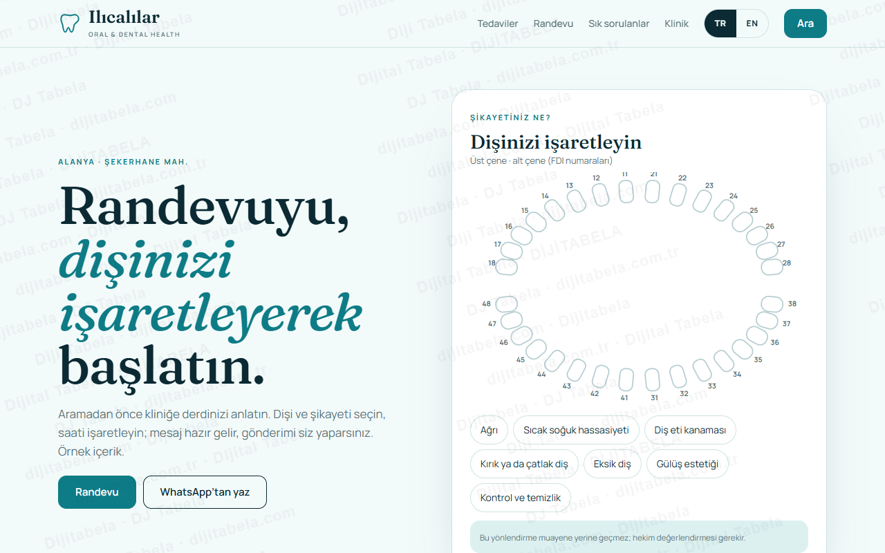
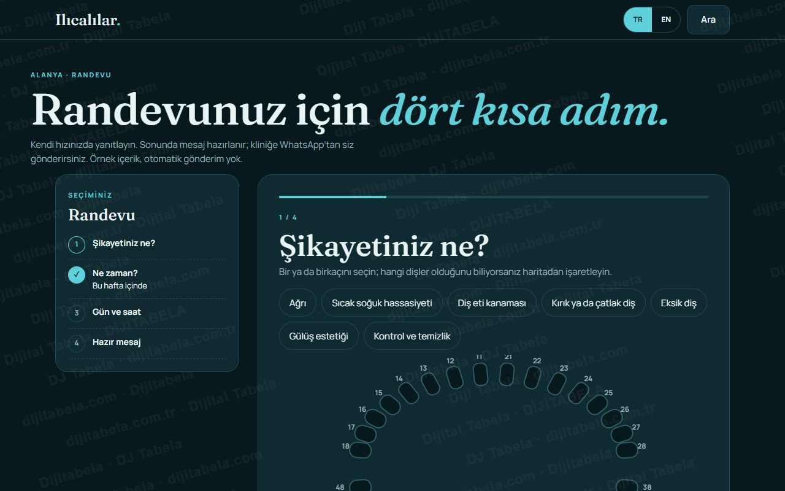
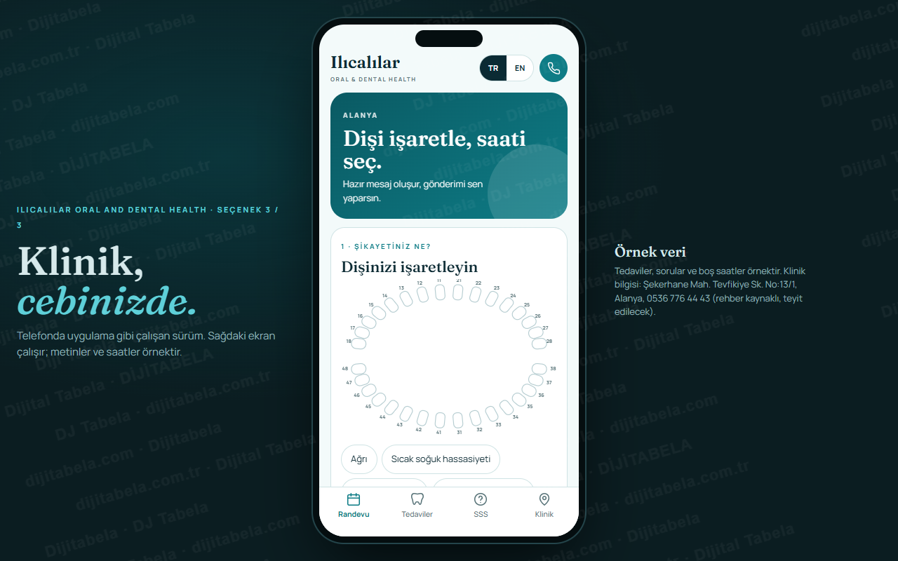

Türkçe ve İngilizce, randevuya odaklı klinik sayfası · 3 tasarım
Ilıcalılar Oral and Dental Health’in sitesini (alanyailicalilar.com) herkese açık haliyle inceledik. Site var; denetimde ana başlık (H1) ve arama sonuçlarında görünen açıklama (meta description) bulunmadığı, İngilizce sayfanın başlığının Türkçe olduğu ve sık sorulanlar sayfasının yapılandırılmamış olduğu görüldü. Buna karşılık Türkçe ve İngilizce arasında geçiş yapan, randevu mesajını hastanın şikayetinden hazırlayan bir klinik sayfası tasarladık. Üç tasarım da çalışır durumda. Tedavi listesi, sorular ve boş saatler örnektir; kliniğin gerçek listesi değildir, tıbbi tavsiye içermez ve hiçbir mesaj otomatik gönderilmez.

Aydınlık sayfa: tıklanabilir diş haritası, şikayete göre yönlendirme, tedaviler, sık sorulanlar.
Klinik yerleşimi: diş haritası, TR/EN geçişiCanlı aç →
Koyu zeminde dört adım: şikayet, zamanlama, gün-saat, hazır mesaj. Yan panelde ilerleme.
Sihirbaz yerleşimi: adım adım, yan özetCanlı aç →
Telefon çerçevesinde uygulama gibi: randevu, tedaviler, sık sorulanlar, klinik.
Uygulama yerleşimi: alt menü, TR/EN düğmesiCanlı aç →- Türkçe / İngilizce geçişi: tek dokunuşla tüm arayüz ve hazır mesaj dili değişir (mevcut sitedeki dil ayrımı sorununa karşılık)
- Diş haritası: FDI numaralı dişleri işaretleyin; seçim mesaja yazılır
- Şikayete göre yönlendirme: ilgili olabilecek tedavi başlıkları gösterilir; muayene yerine geçmez
- Gün ve saat seçimi: örnek doluluk üzerinde, mesaj hazır gelir
- Sık sorulanlar: yapılandırılmış soru-cevap bölümü (örnek metin, klinik onayıyla güncellenir)
- Yol tarifi ve WhatsApp: adres haritada, hazır mesaj kliniğe tek dokunuşla açılır; otomatik gönderim yok
Kaynakta yalnız şunlar görüldü: işletme adı, adres (Şekerhane Mah. Tevfikiye Sk. No:13/1, Alanya), telefon ve alanyailicalilar.com sitesi. Sitedeki bölüm başlıkları (About us, Our services, Why are we?, Our Blog) ve FAQ sayfası görüldü; tedavi içeriği alınmadı. Bu taslaktaki tedavi başlıkları, açıklamalar, sorular ve boş saatler örnektir ve “örnek” etiketlidir. Çalışma saati kaynakta yok; yazılmadı. Telefon rehber kaynaklıdır, yayından önce teyit edilir. Yorum, istatistik veya tıbbi iddia yazılmadı.